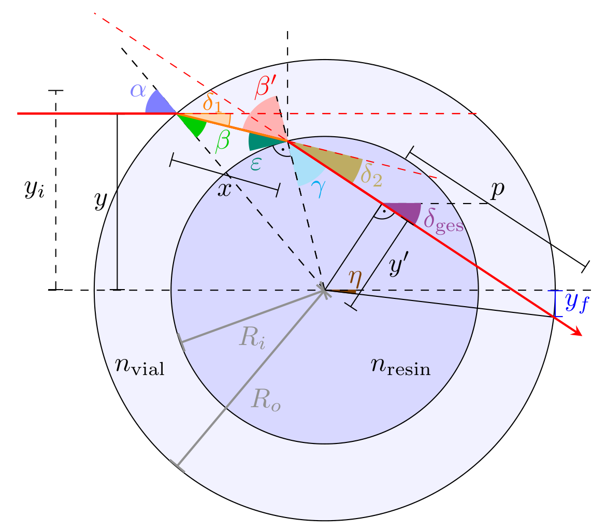

Analytic Derivation of Vial Refraction
If we remove the index matching bath in TVAM, the glass vial affects the ray propagation because of refraction at the glass and vial interface. Our ray optical backend RadonKA.jl can handle non-parallel ray propagation if the intersection of the rays with the outer circle are calculated at entry and exit.
In the following we derive analytical expressions for $y_i$ and $y_f$. Given the circular shaped vial, the angle under which a ray hits the vial is $\alpha = \arcsin(y / R_o)$. Consequently, because of refraction we obtain $\beta=\arcsin(\sin(\alpha) / n_\text{vial})$. The orange segment $x$ is more inconvenient to derive but the law of cosines of triangles provides us with
\[R_i^2 = x^2 + R_o^2 - 2 \cdot x \cdot R_o \cos{\beta}.\]
Solving the quadratic equation, the meaningful solution is
\[x = R_o \cdot \cos{\beta} - \sqrt{R_o^2 \cdot (\cos(\beta)^2 - 1) + R_i^2}.\]
Again, applying law of cosine we can obtain an expression for
\[\varepsilon = \arccos\left(\frac{x^2 + R_i^2 - R_o^2}{2 R_i x}\right) - \frac{\pi}{2}.\]
Further, $\beta'=\mathrm{sign}(y) \cdot (\frac{\pi}{2}- \varepsilon)$ and because of refraction $\gamma=\arcsin(\frac{n_\text{vial} \cdot \sin(\beta')}{n_\text{resin}})$. The total ray deflection angles are given by $\delta_1=\alpha - \beta$ and $\delta_2=\beta'-\gamma$ resulting in $\delta_\text{ges} = \delta_1 + \delta_2$.
To calculate the height $y_i$ which describes the virtual height while entering the outer circle, we first need the distance $y' = R_i \cdot \sin(\gamma)$. Using the Pythagorean theorem we can derive
\[p = \sqrt{R_o^2-y'^2}.\]
Then, the angle $\eta$ is given by $\eta =- \left(\arcsin\left(\frac{y'}{R_0}\right) - \text{sign}(y) \cdot \left(\frac{\pi}{2}-\delta_{\text{ges}}\right)\right)$
Then, the height of the ray at exiting the outer circle, is given by $y_f = R_o \cdot \sin(\eta).$
Because of the isosceles triangle, the height of the virtual ray entering the outer circle is given by
\[y_i = 2\cdot p \cdot \sin(\delta_\text{ges}) + y_f\]